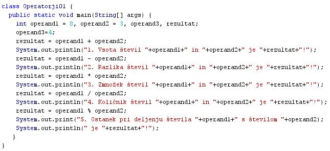
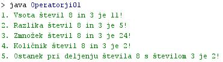

OPERATORJI
- Spremenljivke uporabimo v programih.
- Obièajno obdelujejo programi spremenljivke po doloèenih pravilih.
- Ta pravila imenujemo operacije.
- Znaki, ki povedo programu, po kakšnem pravilu mora obdelati spremenljivke, se imenujejo operatorji.
- Vrednosti spremenljivk, na katerih izvedemo želene operacije, se imenujejo operandi.
- En operator smo že spoznali. To je operator za stikanje nizov "+".
PRIREDITVENI OPERATOR
- V programih moramo spremenljivke najprej napovedati. Napoved spremenljivke mora vsebovati podatkovni tip napovedane spremenljivke in njeno ime.
- Primer: int operand1, operand2, operand3;
- Èe imamo veè spremenljivk istega podatkovnega tipa, jih med seboj loèujemo z vejico.
- Spremenljivka je mesto ali lokacija v pomnilniku, katerega obseg in ostale lastnosti so doloèeni s podatki, ki jih navedemo v napovedi spremenljivke.
- Spremenljivka pa je tudi vsebnik, ki lahko shrani konkretno vrednost spremenljivke.
- Vrednost spremenljivke lahko doloèimo že v napovedi spremenljivke.
- To je doloèitev zaèetne vrednosti spremenljivke ali inicializacija (Latinska beseda "initium" pomeni zaèetek) te spremenljivke.
- Primer: int operand1 = 8, operand2 = 3, operand3 = 4;
- Vrednost spremenljivke lahko doloèimo tudi med izvajanjem programa.
- V obeh primerih pravimo, da neki spremenljivki priredimo neko konkretno vrednost.
- Izvedemo torej operacijo prirejanja vrednosti spremenljivke.
- Simbol, ki nam to operacijo prirejanja vrednosti spremenljivki predstavlja, je "=" (znak enakosti).
- Znak enakosti (=) imenujemo tudi prireditveni operator.
ARITMETIÈNI OPERATORJI
- V Javi lahko izvedemo te aritmetiène operacije:
- Seštevanje operandov; operator je "+".
- Odštevanje operandov; operator je "-".
- Množenje operandov; operator je "*".
- Deljenje operandov; operator je "/".
- Ostanek pri deljenju, operator je "%".
- Mogoèe je tudi kombinirati aritmetiène operatorje s prireditvenim operatorjem.
- Take sestavljene operacije se imenujejo sestavljena prirejanja.
- Èe združimo operanda za seštevanje in prirejanje, dobimo operand "+=".
- Operacija x+=1 je tako le skrajšani zapis operacije x=x+1.
- Oba zapisa pa pomenita poveèanje vrednosti spremenljivke x za 1.
- Podobno pomeni izraz x-=1 zmanjšanje vrednosti spremenljivke x za 1.
VAJA 12:
- V okolju za pisanje izvorne kode v jeziku Java, za prevajanje in za interaktivno delo zapiši program "Operatorji01". Pomagaj si s sliko.
- Kodo lahko tudi kopiraš iz te datoteke in jo prilepiš v okolje, v katerem pišeš programèke. Pozor: koda, ki jo boš kopiral/a, vsebuje eno, dve, tri ali štiri napake. Èe želiš, da bo program deloval, moraš napake odkriti in jih odpraviti.
- Izvorno kodo shrani pod imenom "ImePriimek12.java". ImePriimek je seveda tvoje lastno ime in priimek.
- Datoteko "ImePriimek12.java" prevedi.
- Prevedeno datoteko zaženi, preveri rezultat v interaktivnem oknu in poklièi profesorja, da vidi rezultat.
1. Vprašanja:
1. Kaj so operacije na spremenljivkah?
2. Kaj so operatorji?
3. Kaj so operandi?
4. Naštej aritmetiène operacije v Javi in zapiši njihove operatorje.
5. Kolikokrat je v primeru te uène enote izvedena operacija prirejanja vrednosti spremenljivki?
6. Kolikokrat je v primeru te uène enote izvedena inicializacija spremenljivk?
7. Koliko spremenljivk je daklariranih v primeru te uène enote?
8. Koliko deklariranih spremenljivk ni inicializiranih?
9. Katera spremenljivka v programèku primera te uène enote sploh ni uporabljena?
10. Za vsak posamezen stavek izpisa primera te uène enote zapiši njegovo vrstno številko, raèunsko operacijo, ki jo predstavlja, in še operand, ki je uporabljen.
2. Zapiši od ene do pet kljuènih besed, ki povzemajo vsebino te uène enote.
3. Povezave do dodatnih informacij.
Gradiva na spletnih straneh fakultete za matematiko in fiziko v Ljubljani.
Spletni priroènik proizvajalca programskega okolja Java. To je podjetje Sun.
|